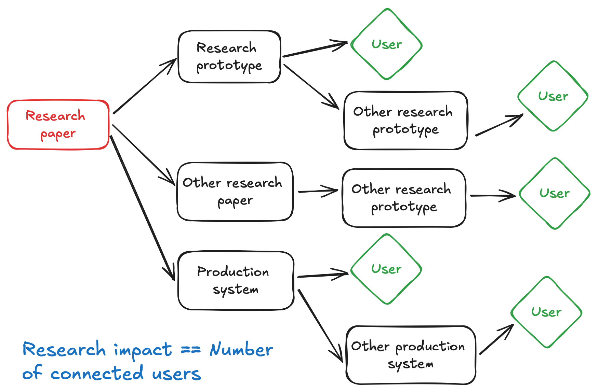

North star

Research should benefit real people.
Impact definition
Research impact is defined by the number of connections between the paper and the users.
Note that the research paper itself does not produce an impact, as nobody’s life is changed because of reading a paper—we are not philosophers. This means that the research impact is always indirect; we have to apply the research to a system with real users.
Due to the indirect nature of the research’s impact, some effort must be made to connect the research to users.
My take: Researchers should take a holistic approach, seamlessly threading their work from the research paper to individual users.
No-goals
No goals help define goals. I’ve made all three types of mistakes, and this is my self-reflection to avoid repeating them.
We are tempted to work on projects proven to be publishable, e.g., improving an existing published method. However, it is not uncommon to see chains of research papers working on a topic irrelevant to the rest of the world. In other words, the impact of a research paper is not defined by how many papers cite it.
Researchers have the privilege to go wild and think big. But this privilege can be misused. Often, it is used to fool ourselves. Physics and math are/can be far from users, but not for computer science – one kind of applied science. As applied scientists, we must ensure our “science” applies to the real world instead of just intellectual exercise.
Some research (e.g., theory) in applied science still enjoys greater freedom than others. However, my research topics are outside them.
This is the most common research mistake. We often believe that researchers should focus on making good ideas, and someone else will go off to make it happen. This is not true. There are way too many good ideas, yet only some are impactful. Most ideas are just combinations of existing techniques, and it is hard to believe anything fundamental will be discovered in system research.
Most importantly, a good idea evolves with the system it builds upon. It is a feedback loop that tries, fails, and repeats. And the great idea that comes out of the system always differs from its initial version. It is never the case that the research flow is a single-directional graph with no feedback from downstream users.
Today’s problem vs tomorrow’s problem
Both types of problems are important and meaningful. I don’t work on tomorrow’s problems (but I agree that someone must work on future problems).
Why not work on future problems: - We have enough of today’s problems to work on. - It’s easier to fool ourselves while working on future problems
Don’t fool ourselves: - We like tomorrow’s problem because it’s easier to claim novelty – future problems naturally come with novelty. - We like tomorrow’s problem because we don’t have to establish user connections. Instead, we use it as an excuse to avoid working on the most important and challenging parts. We are free to propose anything we want, work around any challenges, and eventually disconnect from the rest of the world. - How do we avoid imaginary research? How can we ensure today’s solution is not funny when tomorrow’s problem arrives? Why work on it when future researchers will beat today’s solution with much more practical considerations?
Engineering problem vs research problem
 I have some radical claims on research vs engineering problems:
I have some radical claims on research vs engineering problems:
All engineering problems are meaningful as they come from users and practitioners—no one invented them out of thin air.
All research problems are publishable by definition.
Most engineering problems are also research problems, evidenced by the fact that they haven’t been solved—meaning they are challenging, resource-consuming, or require a deep understanding of practical nuances.
Research problems, without being grounded by engineering problems, are unlikely to be meaningful.